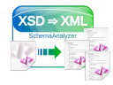
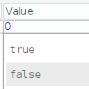
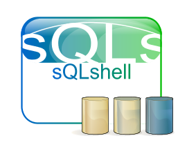

Java
Hauptsächlich Desktop Themen und Java SE
Fork der BeanShell wegen Trojan Source
19.12.2023

Es gibt inzwischen einen von mir erstellten Fork des originalen Repository, in dem ich die Komponente zur Darstellung der Konsole gegen die ausgetauscht habe, die in der sQLshell in den Plugins MDIJavaEditor und MDISqlEditor zum Einsatz kommt - dadurch wird wenigstens durch das Syntax-Highlighting auf problematische Stellen im Code hingewiesen.
Mit Version 1.4.0 wurden die Gegenmaßnahmen gegen Trojan Source und Trojan SQL endlich in einer Release auf Repsy zur Verfügung gestellt.
Repository Wechsel zu Repsy
19.12.2023

Ich habe mich entschlossen, meine diversen Artefakte nicht mehr weiter über GitHub Pages anzubieten.
Anforderungen an eine Bibliothek für Kommandozeilenparameter (in Java)
12.12.2023

Als ich mich neulich mit einer Idee für eine Java-Anwendung beschäftigte wurde schnell klar, dass das eine Kommandozeilenanwendung werden würde, die über eine so große Flexibilität verfügen würde, dass eine robuste Möglichkeit zum Parsen von Kommandozeilenparametern eine Grundvoraussetzung für das Gelingen wäre.
Assertions für XML-Generierung nutzen
27.11.2023

Neulich habe ich den Entschluss gefasst, meinen Generator für XML aus vorgegebenen XML-Schemas zu erweitern: Ich wollte versuchen, den Generator um Unterstützung für Assertions zu ergänzen
DynamicMBean Wrapper für JavaBeans
21.11.2023

Nachdem ich meine Forschungen zu Annotations und BeanInfos für JavaBeans abgeschlossen hatte, entschloss ich mich ein weiteres Projekt zum Abschluss zu bringen, das bereits geraume Zeit geduldig im Backlog meiner Aufmerksamkeit harrte...
Postgres Explain Visualisierung Plugin - Update
18.11.2023
Ich habe bereits über das Plugin zur Visualisierung der Ergebnisse des Postgres Explain Statement berichtet - jetzt gibt es ein Update mit neuer Funktionalität.
Postgres Explain Visualisierung als Plugin
18.11.2023
Durch meine Beschäftigung mit Postgres als Testhäschen für die Unterstützung neuer Datentypen in der sQLshell musste ich mich natürlich auch mehr und tiefgreifender mit Postgres selbst auseinandersetzen.
BeanInfo durch Runtime-Annotations feature-complete und in Bälde Open Source
12.11.2023

Ich habe vor geraumer Zeit laut darüber nachgedacht, dass die Realisierung der BeanInfos in einer separaten Klasse zu aufwendig und fehleranfällig ist. Ich habe dann zunächst eine Variante implementiert, bei der die BeanInfo nicht mehr manuell gepflegt werden musste, sondern aus Annotations generiert wurde.
sQLshell Version 7.7pre3 build 10263
05.11.2023

Eine neue Version der sQLshell ist verfügbar!
Ältere Artikel
Hier geht es zum Archiv der Artikel, die vor dem 27.09.2023 verfasst wurden:
- Desktop Widgets in Java
- Supermarktpreisentwicklung in InfluxDB
- ...


Tags
Android Basteln C und C++ Chaos Datenbanken Docker dWb+ ESP Wifi Garten Geo Git(lab|hub) Go GUI Gui Hardware Java Jupyter Komponenten Links Linux Markdown Markup Music Numerik PKI-X.509-CA Python QBrowser Rants Raspi Revisited Security Software-Test sQLshell TeleGrafana Verschiedenes Video Virtualisierung Windows Upcoming...
Manche nennen es Blog, manche Web-Seite - ich schreibe hier hin und wieder über meine Erlebnisse, Rückschläge und Erleuchtungen bei meinen Hobbies.
Wer daran teilhaben und eventuell sogar davon profitieren möchte, muß damit leben, daß ich hin und wieder kleine Ausflüge in Bereiche mache, die nichts mit IT, Administration oder Softwareentwicklung zu tun haben.
Ich wünsche allen Lesern viel Spaß und hin und wieder einen kleinen AHA!-Effekt...
PS: Meine öffentlichen GitHub-Repositories findet man hier - meine öffentlichen GitLab-Repositories finden sich dagegen hier.